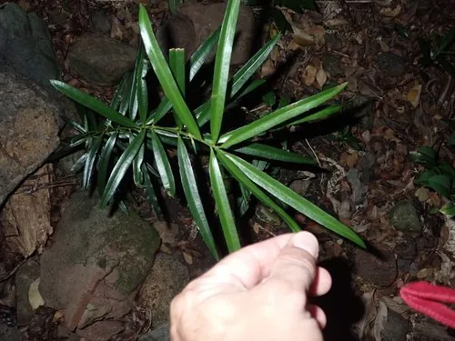

蕨类与裸子植物 · 植物界
罗汉松 Podocarpus macrophyllus

罗汉松树形清雅，种子基部有肥厚的红色种托，宛如披着袈裟的罗汉，是江南园林与盆景中的常见树种。
- 分类
- 门裸子植物门纲松纲目罗汉松目科罗汉松科属罗汉松属
- 栖息环境
- 海拔 1000 m 以下的山地林缘、沟谷与庭院，喜温暖湿润半阴
- 地理分布
- 中国长江以南各地及日本，南方园林广泛栽培
- 保护级别
- 暂无评估；野生种群稀少，以人工栽培为主
物种志
罗汉松是罗汉松科常绿乔木，高可达 20 m，树皮灰褐色，呈鳞片状剥落。叶片条状披针形，厚革质，表面深绿色，背面中脉隆起，螺旋状密生于枝上。雌雄异株，雄球花穗状，雌球花单生于叶腋。种子卵圆形，成熟时呈紫黑色，下面托着肥厚肉质的红色或紫红色种托，形似身披红袍、打坐的罗汉，罗汉松之名由此而来。
罗汉松原产中国长江以南及日本，喜温暖湿润和半阴环境，较耐寒，对土壤要求不严，但不耐水涝和强光暴晒。它生长缓慢、寿命长，枝条耐修剪，是制作松柏类盆景的优良树种，也常用于庭院绿化和绿篱。木材细密，可作器具和雕刻用材。野生罗汉松并不多见，如今园林中栽培的大多为人工繁育品种，如短叶罗汉松、米叶罗汉松等。
形态与习性
- 树高可达 20 m
- 叶条状披针形，厚革质
- 雌雄异株
- 种子紫黑色，下有红色种托
- 生长缓慢，寿命长
- 用途盆景与园林绿化
- 木材细密，可作雕刻用材
趣味知识
- 罗汉松紫黑色的种子配红色种托，像披红袈裟的罗汉，名字由此而来。
- 它耐修剪、寿命长，是松柏类盆景的经典树种。
- 野生罗汉松已不多见，园林中常见的是短叶、米叶等园艺品种。